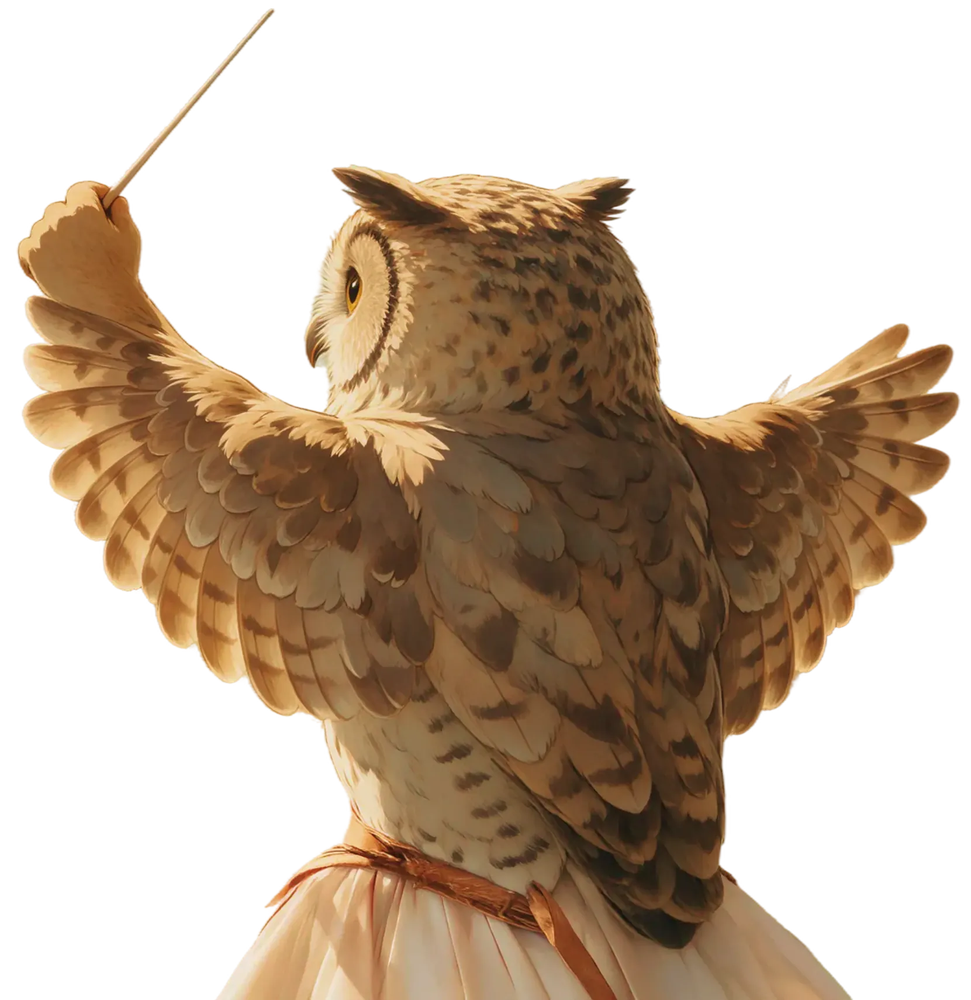
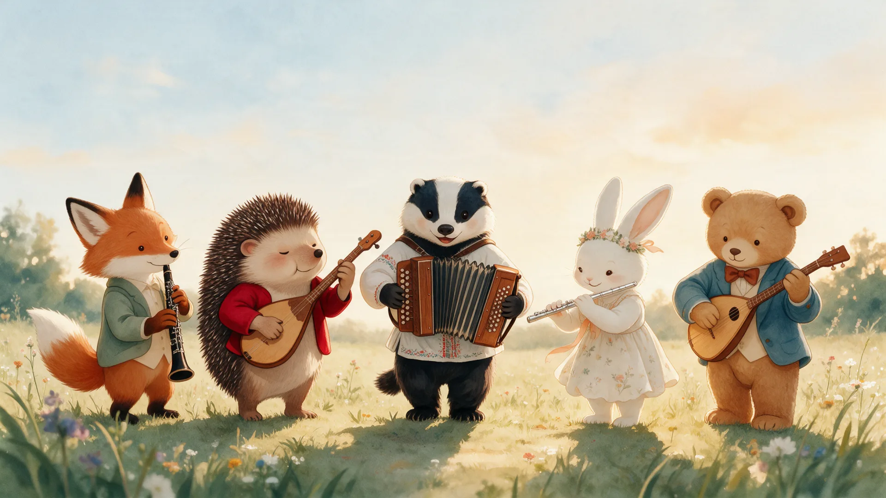

Оркестровая яма

Нажимайте на инструменты, и на поляну придут музыканты. Когда соберутся все пятеро, заиграет оркестр!


Блестящие знания! Дирижёр снимает шляпу

Нажимайте на инструменты, и на поляну придут музыканты. Когда соберутся все пятеро, заиграет оркестр!

Блестящие знания! Дирижёр снимает шляпу